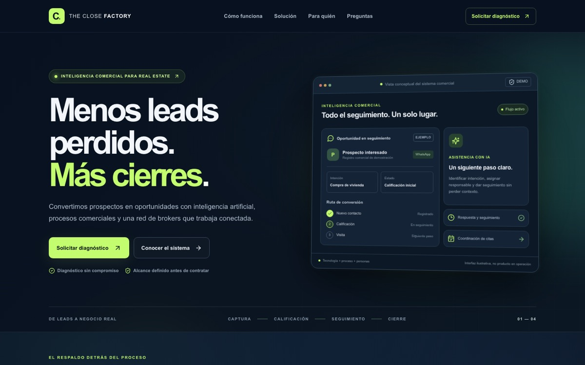
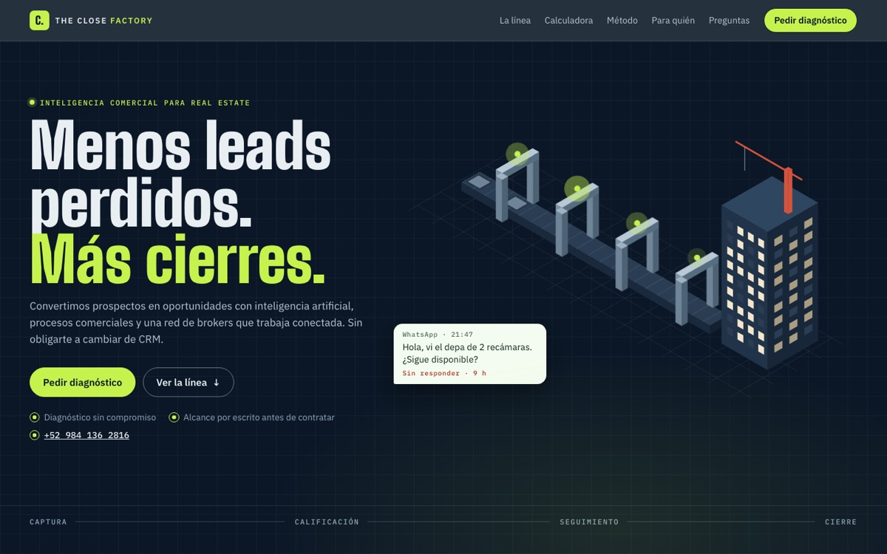

La página explica qué vende y qué no promete. Con la evidencia pública de hoy no puede aparecer en buscadores, no se reenvía con imagen y no distingue qué botón abrió la conversación de WhatsApp.
Punto de partida
Lo que ya sostiene la página
- Una sola tarea: pedir un diagnóstico. Los botones cambian de verbo y llegan al mismo WhatsApp.
- Las preguntas acotan la promesa: no es necesariamente otro CRM, la IA no cierra sola, no hay ventas garantizadas y el precio se define después.
- El panel del hero muestra una oportunidad de ejemplo y dice que es ilustrativo, no el producto en operación.
- Hay un solo h1, el idioma es es-MX, el color de tema es #08111f y Vercel entrega la vista prerenderizada con HSTS.
- Grupo Zamna y ROVI CRM enlazan a sitios que respondieron 200 el día de la consulta.
Medido en la portada
Hechos, sin puntaje inventado
| Hecho | Evidencia |
|---|---|
| Fuera de índice | meta robots: noindex, nofollow |
| Sin mapa ni robots.txt | sitemap.xml y robots.txt responden 404 |
| Sin URL propia declarada | no hay canonical ni og:url |
| Sin imagen al compartir | no hay og:image; Twitter es summary; no hay favicon |
| Sin prueba visual ni formulario | cero imágenes, cero videos, cero formularios, cero JSON-LD |
| Un solo mensaje | seis llamados, un enlace de WhatsApp |
| Textos de compartir distintos | la meta nombra brokers; Open Graph y Twitter, no |
| El segundo botón no abre el panel | «Conocer el sistema» apunta a #como-funciona |
Ordenadas por lo que impiden
Ocho fugas
01 No puede aparecer en buscadores Preparada · falta dominio
Evidencia. La página incluye noindex, nofollow. No declara canonical ni og:url. robots.txt y sitemap.xml responden 404; el primero devuelve HTML, no un archivo de reglas.
Efecto. Si esta URL de Vercel es la que debe atraer demanda, los buscadores no deben indexarla. Si es un borrador hasta tener dominio, el noindex es la decisión correcta y conviene tratarla así.
En la v2La v2 declara canonical, og:url y JSON-LD (Organization, ProfessionalService y FAQPage). El noindex se queda a propósito mientras no haya dominio definitivo; robots.txt ya responde reglas, no HTML.
02 Al reenviar el enlace no hay imagen Resuelta
Evidencia. No hay og:image ni favicon. La tarjeta de Twitter es summary, no una vista grande.
Efecto. El cierre es WhatsApp, así que el enlace se va a reenviar. Quien lo reciba ve título y un texto corto, sin el panel de seguimiento.
En la v2Imagen para compartir de 1200×630, tarjeta summary_large_image y favicon.
03 No se sabe qué botón originó la conversación Resuelta
Evidencia. Solicitar diagnóstico (navegación y hero), Evaluar mi operación, Quiero medir mi conversión, Hablemos de tu caso y Agendar diagnóstico por WhatsApp usan el mismo enlace y el mismo texto: solicitar un diagnóstico comercial. El número no está escrito en la página.
Efecto. El equipo no distingue el hero del cierre. Quien no pueda abrir WhatsApp no tiene el contacto en texto.
En la v2Nueve enlaces de WhatsApp, cada uno con su origen («Vengo de: calculadora», «… redes de brokers»). Si la visita llega con utm_campaign o utm_source, la campaña se agrega al mensaje. El número está escrito en el hero, el cierre y el formulario.
04 Pide medición y no muestra ninguna Parcial · falta un caso real
Evidencia. «Lo que no se mide, se pierde» enlista primera respuesta, prospectos calificados, citas, propuestas y costo de atención. No hay un número, un caso ni un nombre. No hay fotos. El panel avisa que no es el producto real.
Efecto. La cautela evita una promesa falsa. También deja la oferta sin una evidencia que el visitante pueda comprobar.
En la v2La calculadora de fuga usa los números del visitante y la hoja de control del piloto lleva un criterio de salida por escrito. Sigue faltando un caso o cifra real: requiere permiso de los socios.
05 «Conocer el sistema» no lleva al sistema Resuelta
Evidencia. Ese botón apunta a #como-funciona, el método de cuatro pasos. El panel que muestra una oportunidad está en el hero y su título es un h3, antes del primer h2.
Efecto. Quien pide ver el sistema baja al proceso de contratación, no a la orden de seguimiento.
En la v2«Ver la línea» baja a la línea interactiva; la orden es un h3 bajo su propio h2.
06 Si ese WhatsApp no contesta, el recorrido se corta Parcial
Evidencia. No hay formulario, correo, agenda ni horario. No medí si el número responde.
Efecto. El diagnóstico sin compromiso depende de una respuesta humana que la página no demuestra.
En la v2Formulario de tres campos que arma el mensaje, botón «Copiar mensaje» y teléfono a la vista. Aún no guarda la solicitud en un CRM ni publica un horario de respuesta.
07 El texto para compartir omite a una audiencia Resuelta
Evidencia. La meta description conecta prospectos, IA, brokers y seguimiento. Open Graph y Twitter dicen «Inteligencia comercial para desarrolladores e inmobiliarias».
Efecto. Las redes de brokers son la tercera audiencia de la página y no aparecen cuando alguien comparte el enlace.
En la v2Description, Open Graph y Twitter nombran a desarrolladores, inmobiliarias y redes de brokers.
08 Los socios son respaldo y también una salida Mitigada
Evidencia. Grupo Zamna y ROVI CRM enlazan a sus sitios. Esos sitios respondieron 200. No hay analítica para contar cuántos se van.
Efecto. El respaldo está disponible. También hay una salida antes de pedir el diagnóstico.
En la v2Los socios abren en otra pestaña, así que el visitante no pierde la página. Sin analítica todavía no se puede medir cuántos salen.
Antes / Ahora
De plantilla SaaS a línea de producción


- La página pública de Vercel no cambió: las fugas se describen sobre ella y el estado «En la v2» se refiere a esta demo.
- Las dos llevan noindex. Esta demo, porque todavía no tiene dominio definitivo.
Fuera de este análisis
Qué no se puede afirmar
- No hay Search Console, analítica ni exportación de WhatsApp en esta carpeta.
- No sé cuántas personas llegan, cuánto tarda la primera respuesta ni si el noindex espera un dominio propio.
- Hasta tener eso, el hallazgo queda en la página: explica el proceso con prudencia y todavía no puede demostrar ni atribuir un diagnóstico.